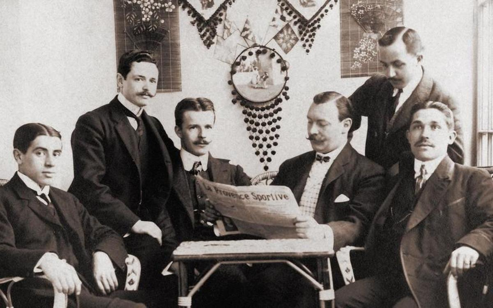
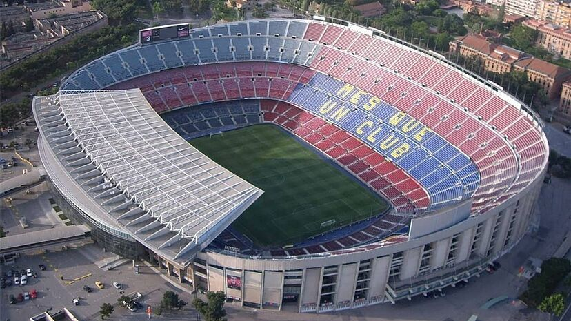

Joan Gamper fue un visionario suizo apasionado por el fútbol.
Fundó el FC Barcelona en 1899 y lo estableció como un club moderno.
Su dedicación y amor por el deporte sentaron las bases del éxito.
Gracias a él, el Barça se convirtió en un referente internacional.
Fecha de Fundación

El club fue fundado el 29 de noviembre de 1899.
La iniciativa surgió en un momento en que el fútbol comenzaba a popularizarse.
Un pequeño grupo de entusiastas lo hizo posible.
Desde entonces, el Barça comenzó a escribir su historia legendaria.
Estadio

El Camp Nou se inauguró en 1957 y es el estadio más grande de España.
Ha sido escenario de partidos históricos y finales memorables.
Su arquitectura y capacidad lo hacen emblemático a nivel mundial.
Es un símbolo de identidad para los aficionados del Barça.
Trayectoria
A lo largo de los años, el Barça ha logrado innumerables títulos.
Su participación en ligas nacionales e internacionales ha sido destacada.
Ha contado con jugadores icónicos que marcaron época.
Su historia refleja constancia, talento y excelencia deportiva.